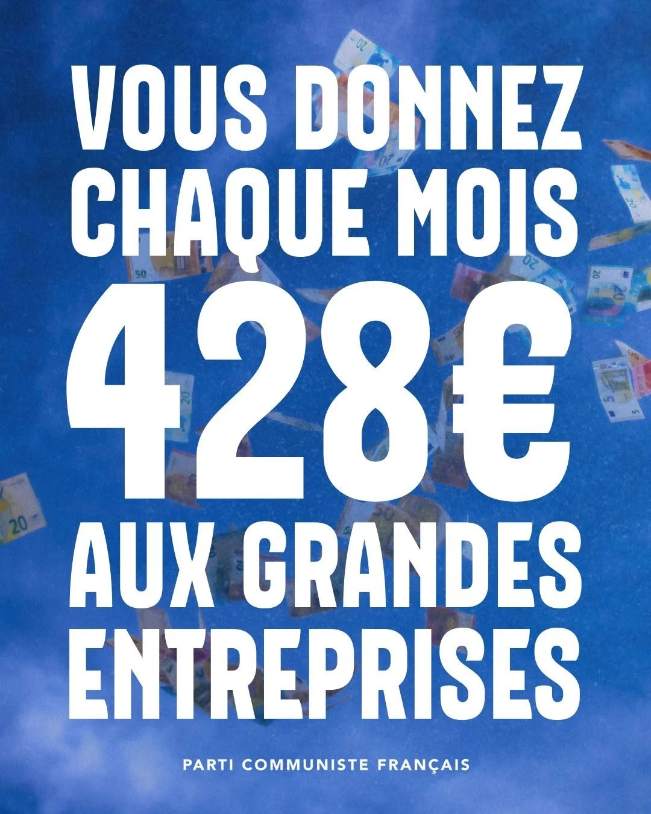

Publication relayée par le PCF 79
Le PCF demande de conditionner les aides publiques aux grandes entreprises
Date de mise à jour indiquée par Facebook · 18 février 2026
Texte de la publication · PCF national
💸 Les 211 milliards d’euros d’aides publiques versés chaque année aux grandes entreprises, sans contrôle réel ni contreparties sociales ou écologiques sérieuses, représentent en moyenne
428 € par mois et par foyer fiscal.
Pendant que le gouvernement demande aux travailleurs, aux retraités et aux services publics
de se serrer la ceinture, ces milliards alimentent les profits et les dividendes.
Cet argent doit servir l’emploi,
les salaires, l’industrie et la transition écologique : pas engraisser le capital.
Signez la pétition en commentaire pour exiger le conditionnement de ces aides à des critères sociaux et écologiques.

Sources
PCF national · publication relayée par le PCF 79 · bibliothèque Facebook · AR-0002-FB-00865
À lire aussi · Fabien Gay reçoit le Prix Éthique d’Anticor pour le rapport sur les aides publiques aux entreprises